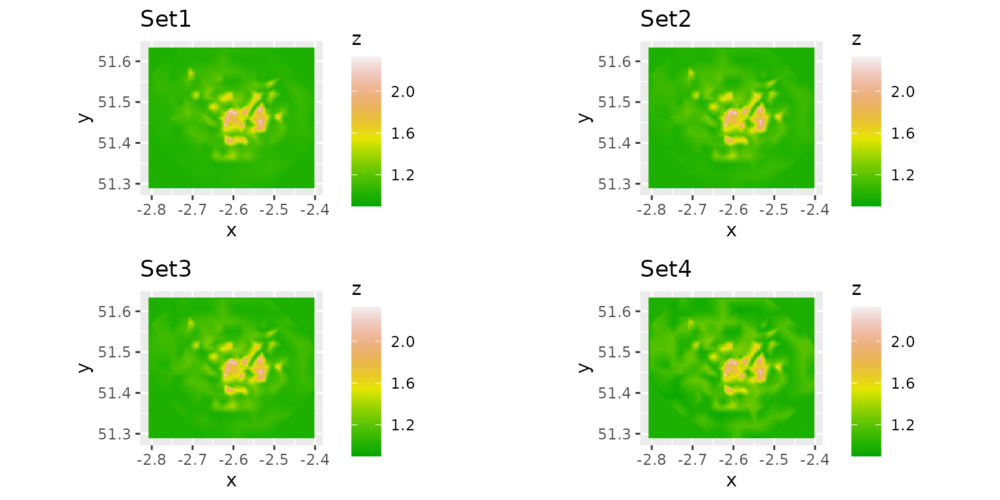

Aim and data description
In this tutorial we’ll show an example of exploring the impact of different priors for the spatial and temporal autocorrelation parameters on the model inference results obtained from the INLA-SPDE approach. A Bayesian spatio-temporal model with different priors will be fitted to the COVID-19 infections data in Bristol to predict the COVID-19 infection rate across Bristol.
The study region is Bristol city, which is partitioned into 55
neighbourhoods at the Middle Layer Super Output Area (MSOA) scale. The
shapefile of the study region shape is a
SpatialPolygonsDataFrame, which is used to map the data. It
stores the location, shape and attributes of geographic features for the
neighbourhoods.
We first load INLA and then retrieve the data from the fdmr example
data store. We’ll use retrieve_tutorial_data to do
this.
library(INLA)## Loading required package: Matrix## Loading required package: sp## This is INLA_23.11.15 built 2023-11-15 19:10:15 UTC.
## - See www.r-inla.org/contact-us for how to get help.
## - List available models/likelihoods/etc with inla.list.models()
## - Use inla.doc(<NAME>) to access documentation
fdmr::retrieve_tutorial_data(dataset = "priors")##
## Tutorial data extracted to /home/runner/fdmr/tutorial_data/priorsNext we’ll use the load_tutorial_data function to load
in the spatial data we want.
sp_data <- fdmr::load_tutorial_data(dataset = "priors", filename = "spatial_dataBris.rds")Now we make a map of the study region.
sp_data@data$mapp <- 0
domain <- sp_data@data$mapp
fdmr::plot_map(polygon_data = sp_data, domain = domain, add_scale_bar = TRUE, polygon_fill_opacity = 0.5, palette = "YlOrRd")A map of the study region.
The COVID-19 data in Bristol are included in our tutorial data package. We’ll load in the data using same process we used above
covid19_data <- fdmr::load_tutorial_data(dataset = "priors", filename = "covid19_dataBris.rds")Then the first 6 rows of the data set can be viewed using the following code
utils::head(covid19_data)## UtlaName date week MSOA11CD cases Population prevalence
## 3 Bristol, City of 2021-12-25 1 E02003014 89 8292 0.010733237
## 4 Bristol, City of 2021-12-25 1 E02003015 99 6692 0.014793784
## 5 Bristol, City of 2021-12-25 1 E02003016 99 8169 0.012118986
## 6 Bristol, City of 2021-12-25 1 E02003017 74 6118 0.012095456
## 7 Bristol, City of 2021-12-25 1 E02003018 69 5870 0.011754685
## 9 Bristol, City of 2021-12-25 1 E02003020 55 6416 0.008572319
## LONG LAT
## 3 -2.66729 51.51507
## 4 -2.59093 51.49491
## 5 -2.57357 51.49471
## 6 -2.61209 51.48767
## 7 -2.65070 51.48954
## 9 -2.62725 51.49219The response variable “cases” in this study is the weekly reported number of COVID-19 cases in each MSOA in Bristol over the period from 2021-12-25 to 2022-03-26. “prevalence” is the observed COVID-19 infection rate, computed as the ratio of “cases” to “Population” in each MSOA. We use a Bayesian hierarchical model to predict the spatio-temporal COVID-19 infection rate at the MSOA level in Bristol. As the response variable is a count the data likelihood model commonly used is a Poisson model.
Model specification
Let \(Y_{it}\) denotes the weekly number of reported COVID cases for neighbourhood \(i=1,\ldots, n(=55)\) and week \(t=1,\ldots, T(=14)\) and \(N_{it}\) denotes the (official) estimated population living in neighbourhood \(i\) and week \(t\). \(Y_{it}\) is assumed to have a Poisson distribution with parameters (\(N_{it}\), \(\theta_{it}\)), where \(\theta_{it}\) is the true unobserved COVID-19 infection rate / risk in neighbourhood \(i\) and week \(t\). We follow a standard path in modelling \(\theta_{it}\) with a log link to the Poisson and start with a model where the linear predictor decomposes additively into a set of covariates and a Gaussian latent process characterizing the infection of the disease after the covariate effects have been accounted for. The proposed model is given by
\[\begin{align} \nonumber Y_{it}\vert N_{it}, \theta_{it} &\sim \text{Poisson}(N_{it}\theta_{it}),\ \ i=1,\ldots,n;\ \ t=1,\ldots,T,\\ log(\theta_{it} )&=\boldsymbol{x_{it}^{\top}}\boldsymbol{\beta}+S(i,t). \end{align}\]
A vector of covariates (if needed) is given by \(\boldsymbol{x_{it}}\) for neighbourhood \(i\) and time period \(t\). \(\boldsymbol\beta\) is a vector of regression parameters. \(S(i,t)\) is a spatio-temporal random effect at location \(i\) and time \(t\), which is modelled by
\[S(i,t)=\alpha \times S(i,t-1)+\omega(i,t).\]
Here \(S(i,t)\) follows a stationary distribution of a first-order autoregressive process (AR(1)) and \(\alpha\) is the temporal dependence parameter that takes on a value in the interval [-1,1], with \(\alpha=1\) indicating strong temporal dependence (a first-order random walk), while \(\alpha=0\) corresponds to independence across time. \(\omega(i,t)\) is a spatial random effect that is assumed to arise from a multivariate normal distribution. Each \(\omega(i,t)\) follows a zero-mean Gaussian field which is assumed to be temporally independent but spatially dependent at each time period with Matérn covariance function given by
\[\text{Cov}(\omega(i,t), \omega(j,t))=\frac{\sigma^2}{2^{\nu-1}\Gamma(\nu)}(\kappa||i-j||)^{\nu}K_{\nu}(\kappa||i-j||),\] where \(K_{\nu}(\cdot)\) is the modified Bessel function of second kind, and \(\Gamma(\nu)\) is the Gamma function. The Matérn covariance function has three hyperparameters:
- \(\sigma^2\) controls the marginal variance of the process S(i,t).
- \(\kappa\) controls the spatial correlation range, which can be defined as \(\rho=\sqrt{8\nu}/\kappa\).
- \(\nu\) controls the smoothness, where higher values leads to processes that are more smoother.
The model is implemented through the INLA-SPDE approach in R programming. A few steps are needed before fitting the model:
- Create a triangulated mesh of the study region
- Build the SPDE model based on the mesh and set priors for the spatial parameters
- Define how the process evolves over time and set prior for the temporal parameter
- Define the model formula
Mesh construction
To implement the INLA-SPDE approach, it is necessary to discretize
the space by creating a triangulated mesh that establishes a set of
artificial neighbors across the study region. Here we use the
fmesher::fm_mesh_2d_inla to construct our mesh.
Build the SPDE model on the mesh and set priors for the spatial parameters
To fit the spatio-temporal BHM, it is essential to define prior distributions for the model parameters associated with spatio-temporal autocorrelation. The choice of priors depends on the specific research questions, and relies on prior research findings and expert knowledge. By carefully selecting and specifying priors, we can capture the uncertainty and prior beliefs about the spatial and temporal patterns of data. These priors play a crucial role in Bayesian inference, as they inform the estimation of model parameters and subsequent predictions. Exploring different priors allows us to assess the sensitivity of the model results to the choice of prior distributions. This sensitivity analysis helps us understand the robustness of the conclusions drawn from the BHM and provides insights into the impact of prior assumptions on the final inference. Therefore, in this context of a COVID-19 study, we investigate the influence of varying priors for the spatial and temporal autocorrelation parameters on the model inference.
We use the INLA::inla.spde2.pcmatern() function to build the SPDE model and specify Penalised Complexity (PC) priors for the parameters of the Matérn field. PC priors for the parameters range (\(\rho\)) and marginal standard deviation (\(\sigma\)) of the Matérn field are specified by setting the values of “prior_range”, “ps_range”, “prior_sigma”, and “pg_sigma” in the relations that P(\(\rho\) < prior_range) = ps_range, and P(\(\sigma\) > prior_sigma) = pg_sigma. The spatial range \(\rho\) of the process is the distance at which the correlation between two values is close to 0.1. P(\(\rho\) < prior_range) = ps_range indicates that the probability that \(\rho\) is smaller than prior_range is ps_range, and P(\(\sigma\) > prior_sigma) = pg_sigma indicates that the probability that \(\sigma\) is larger than prior_sigma is pg_sigma.
Define how the process evolves over time and set prior for the temporal parameter
The previous step has specified that in each of the time periods the spatial locations are linked by the SPDE model. Now we assume that across time the process evolves according to a first order autoregressive (AR(1)) process. We specify a PC prior for the temporal autocorrelation parameter \(\alpha\). The PC prior for \(\alpha\) is specified by setting the values of “prior_alpha” and “pg_alpha” in the relations that P(\(\alpha\) > prior_alpha) = pg_alpha, indicating that the probability of \(\alpha\) greater than prior_alpha is pg_alpha.
Now create a dataframe “priors_dat” that contains four different sets of values of “prior_range”, “ps_range”, “prior_sigma”, “pg_sigma”, “prior_alpha” and “pg_alpha”. Each row represents a set of priors for spatio-temporal correlation parameter.
priors_dat <- base::data.frame(
prior_range = rep(NA, 4),
ps_range = rep(NA, 4),
prior_sigma = rep(NA, 4),
pg_sigma = rep(NA, 4),
prior_alpha = rep(NA, 4),
pg_alpha = rep(NA, 4)
)
priors_dat$prior_range <- c(0.05, 0.1, 0.5, 1)
priors_dat$ps_range <- c(0.1, 0.7, 0.9, 0.1)
priors_dat$prior_sigma <- c(0.05, 0.1, 0.5, 2)
priors_dat$pg_sigma <- c(0.2, 0.4, 0.5, 0.7)
priors_dat$prior_alpha <- c(-0.2, 0.1, 0.4, 0.8)
priors_dat$pg_alpha <- c(0.8, 0.7, 0.6, 0.5)Now we fit the BHM to the data separately for each set of the priors. First, we create a wrapper function to do the INLA inference and prediction.
INLA_infer <- function(mesh, prior_range, ps_range,
prior_sigma, pg_sigma,
prior_ar1, pg_ar1,
data) {
spde <- INLA::inla.spde2.pcmatern(
mesh = mesh,
prior.range = c(prior_range, ps_range),
prior.sigma = c(prior_sigma, pg_sigma)
)
alphaprior <- base::list(theta = list(
prior = "pccor1",
param = c(prior_ar1, pg_ar1)
))
group_index <- data$week
n_groups <- base::length(base::unique(data$week))
sp::coordinates(data) <- c("LONG", "LAT")
formula <- cases ~ 0 + Intercept(1) + f(
main = coordinates,
model = spde,
group = group_index,
ngroup = n_groups,
control.group = list(
model = "ar1",
hyper = alphaprior
)
)
inlabru_model <- inlabru::bru(formula,
data = data,
family = "poisson",
E = data$Population,
control.family = list(link = "log"),
options = list(
verbose = FALSE
)
)
fitted.mean.post <- inlabru_model$summary.fitted.values$mean[1:nrow(data)]
fitted.sd.post <- inlabru_model$summary.fitted.values$sd[1:nrow(data)]
mean.post <- inlabru_model$summary.random$f$mean
sd.post <- inlabru_model$summary.random$f$sd
fixed.mean <- inlabru_model$summary.fixed$mean
dic <- inlabru_model$dic$dic
pars <- inlabru_model$marginals.hyperpar
return(list(
fitted.mean.post = fitted.mean.post,
fitted.sd.post = fitted.sd.post,
mean.post = mean.post,
sd.post = sd.post,
fixed.mean = fixed.mean,
dic = dic,
pars = pars
))
}Now we fit the model separately for each set of prior values.
m1 <- INLA_infer(
mesh = mesh,
prior_range = priors_dat$prior_range[1],
ps_range = priors_dat$ps_range[1],
prior_sigma = priors_dat$prior_sigma[1],
pg_sigma = priors_dat$pg_sigma[1],
prior_ar1 = priors_dat$prior_alpha[1],
pg_ar1 = priors_dat$pg_alpha[1],
data = covid19_data
)
m2 <- INLA_infer(
mesh = mesh,
prior_range = priors_dat$prior_range[2],
ps_range = priors_dat$ps_range[2],
prior_sigma = priors_dat$prior_sigma[2],
pg_sigma = priors_dat$pg_sigma[2],
prior_ar1 = priors_dat$prior_alpha[2],
pg_ar1 = priors_dat$pg_alpha[2],
data = covid19_data
)
m3 <- INLA_infer(
mesh = mesh,
prior_range = priors_dat$prior_range[3],
ps_range = priors_dat$ps_range[3],
prior_sigma = priors_dat$prior_sigma[3],
pg_sigma = priors_dat$pg_sigma[3],
prior_ar1 = priors_dat$prior_alpha[3],
pg_ar1 = priors_dat$pg_alpha[3],
data = covid19_data
)
m4 <- INLA_infer(
mesh = mesh,
prior_range = priors_dat$prior_range[4],
ps_range = priors_dat$ps_range[4],
prior_sigma = priors_dat$prior_sigma[4],
pg_sigma = priors_dat$pg_sigma[4],
prior_ar1 = priors_dat$prior_alpha[4],
pg_ar1 = priors_dat$pg_alpha[4],
data = covid19_data
)The model outputs of the four models above are provided in the tutorial data package so we’ll load that now.
NOTE: If you’ve run the full models above you don’t need to load in the files below.
m1 <- fdmr::load_tutorial_data(dataset = "priors", filename = "m1.rds")
m2 <- fdmr::load_tutorial_data(dataset = "priors", filename = "m2.rds")
m3 <- fdmr::load_tutorial_data(dataset = "priors", filename = "m3.rds")
m4 <- fdmr::load_tutorial_data(dataset = "priors", filename = "m4.rds")Compare the posteriors of the parameters for different priors.
Different prior values result in different model parameter estimates.
plot(m1$pars$`Range for f`,
type = "l",
main = "range", xlim = c(0.06, 0.3), col = 1
)
lines(m2$pars$`Range for f`, col = 2)
lines(m3$pars$`Range for f`, col = 3)
lines(m4$pars$`Range for f`, col = 4)
legend("topright", legend = c("set1", "set2", "set3", "set4"), lty = rep(1, 4), col = c(1, 2, 3, 4))
plot(m1$pars$`Stdev for f`,
type = "l",
main = "marginal standard deviation ", xlim = c(0.3, 1.45), col = 1
)
lines(m2$pars$`Stdev for f`, col = 2)
lines(m3$pars$`Stdev for f`, col = 3)
lines(m4$pars$`Stdev for f`, col = 4)
legend("topright", legend = c("set1", "set2", "set3", "set4"), lty = rep(1, 4), col = c(1, 2, 3, 4))
plot(m1$pars$`GroupRho for f`,
type = "l",
main = "AR(1) ", xlim = c(0.7, 0.99), ylim = c(0, 21), col = 1
)
lines(m2$pars$`GroupRho for f`, col = 2)
lines(m3$pars$`GroupRho for f`, col = 3)
lines(m4$pars$`GroupRho for f`, col = 4)
legend("topright", legend = c("set1", "set2", "set3", "set4"), lty = rep(1, 4), col = c(1, 2, 3, 4))Compare the posterior estimates of COVID-19 infection rates for different priors
The boxplots and density curves of the estimated COVID-19 infection rates for each model are shown below. Although the priors are different, the posterior infection rate estimates among the four models are similar, indicating the modelling results are robust to the choice of the priors.
post_rate <- base::cbind.data.frame(
"set1" = m1$fitted.mean.post,
"set2" = m2$fitted.mean.post,
"set3" = m3$fitted.mean.post,
"set4" = m4$fitted.mean.post
)
graphics::boxplot(post_rate, xlab = "Prior scenario", ylab = "Rate estimates")
post_rate <- base::cbind.data.frame(
"Prior scenario" = rep(c("set1", "set2", "set3", "set4"), each = nrow(covid19_data)),
"Rate estimates" = c(
m1$fitted.mean.post, m2$fitted.mean.post,
m3$fitted.mean.post, m4$fitted.mean.post
)
)
ggplot2::ggplot(post_rate, ggplot2::aes(x = `Rate estimates`, color = `Prior scenario`)) +
ggplot2::geom_density()Compare the observed rates and the estimated rates for different priors.
Here we compare the distribution of the estimated infection rates with the observed rates for different priors.
pos_obs_rate <- base::rbind.data.frame(
data.frame(
"scenario" = post_rate[post_rate$`Prior scenario` == "set1", ]$`Prior scenario`,
"rate" = post_rate[post_rate$`Prior scenario` == "set1", ]$`Rate estimates`
),
base::cbind.data.frame("scenario" = base::rep("observed", base::nrow(covid19_data)), "rate" = covid19_data$prevalence)
)
p1 <- ggplot2::ggplot(pos_obs_rate, ggplot2::aes(x = rate, fill = scenario)) +
ggplot2::geom_histogram(ggplot2::aes(y = ..density..), alpha = 0.3, position = "identity")
pos_obs_rate <- base::rbind.data.frame(
data.frame(
"scenario" = post_rate[post_rate$`Prior scenario` == "set2", ]$`Prior scenario`,
"rate" = post_rate[post_rate$`Prior scenario` == "set2", ]$`Rate estimates`
),
base::cbind.data.frame("scenario" = base::rep("observed", base::nrow(covid19_data)), "rate" = covid19_data$prevalence)
)
p2 <- ggplot2::ggplot(pos_obs_rate, ggplot2::aes(x = rate, fill = scenario)) +
ggplot2::geom_histogram(ggplot2::aes(y = ..density..), alpha = 0.3, position = "identity")
pos_obs_rate <- base::rbind.data.frame(
data.frame(
"scenario" = post_rate[post_rate$`Prior scenario` == "set3", ]$`Prior scenario`,
"rate" = post_rate[post_rate$`Prior scenario` == "set3", ]$`Rate estimates`
),
base::cbind.data.frame("scenario" = base::rep("observed", base::nrow(covid19_data)), "rate" = covid19_data$prevalence)
)
p3 <- ggplot2::ggplot(pos_obs_rate, ggplot2::aes(x = rate, fill = scenario)) +
ggplot2::geom_histogram(ggplot2::aes(y = ..density..), alpha = 0.3, position = "identity")
pos_obs_rate <- base::rbind.data.frame(
data.frame(
"scenario" = post_rate[post_rate$`Prior scenario` == "set4", ]$`Prior scenario`,
"rate" = post_rate[post_rate$`Prior scenario` == "set4", ]$`Rate estimates`
),
base::cbind.data.frame("scenario" = base::rep("observed", base::nrow(covid19_data)), "rate" = covid19_data$prevalence)
)
p4 <- ggplot2::ggplot(pos_obs_rate, ggplot2::aes(x = rate, fill = scenario)) +
ggplot2::geom_histogram(ggplot2::aes(y = ..density..), alpha = 0.3, position = "identity")
gridExtra::grid.arrange(p1, p2, p3, p4, ncol = 2)## `stat_bin()` using `bins = 30`. Pick better value with `binwidth`.
## `stat_bin()` using `bins = 30`. Pick better value with `binwidth`.
## `stat_bin()` using `bins = 30`. Pick better value with `binwidth`.
## `stat_bin()` using `bins = 30`. Pick better value with `binwidth`.Compare the predicted mean fields for different priors
We compare the predicted mean Gaussian random field.
mod.proj <- INLA::inla.mesh.projector(mesh)
xygrid <- base::expand.grid(mod.proj$x, mod.proj$y)
Aproj <- INLA::inla.spde.make.A(mesh = mesh, loc = as.matrix(xygrid))
z <- base::exp(base::as.numeric(Aproj %*% m1$mean.post[1:mesh$n]) +
base::sum(m1$summary.fixed$mean))
predfield <- base::data.frame(x = xygrid[, 1], y = xygrid[, 2], z = z)
g1 <- ggplot2::ggplot(predfield) +
ggplot2::coord_fixed() +
ggplot2::geom_raster(ggplot2::aes(x = x, y = y, fill = z)) +
ggplot2::scale_fill_gradientn(colours = terrain.colors(12), limit = c(0.9, 2.33)) +
ggplot2::ggtitle("Set1")
z <- base::exp(base::as.numeric(Aproj %*% m2$mean.post[1:mesh$n]) +
base::sum(m2$summary.fixed$mean))
predfield <- base::data.frame(x = xygrid[, 1], y = xygrid[, 2], z = z)
g2 <- ggplot2::ggplot(predfield) +
ggplot2::coord_fixed() +
ggplot2::geom_raster(ggplot2::aes(x = x, y = y, fill = z)) +
ggplot2::scale_fill_gradientn(colours = terrain.colors(12), limit = c(0.9, 2.33)) +
ggplot2::ggtitle("Set2")
z <- base::exp(base::as.numeric(Aproj %*% m3$mean.post[1:mesh$n]) +
base::sum(m3$summary.fixed$mean))
predfield <- base::data.frame(x = xygrid[, 1], y = xygrid[, 2], z = z)
g3 <- ggplot2::ggplot(predfield) +
ggplot2::coord_fixed() +
ggplot2::geom_raster(ggplot2::aes(x = x, y = y, fill = z)) +
ggplot2::scale_fill_gradientn(colours = terrain.colors(12), limit = c(0.9, 2.33)) +
ggplot2::ggtitle("Set3")
z <- base::exp(base::as.numeric(Aproj %*% m4$mean.post[1:mesh$n]) +
base::sum(m4$summary.fixed$mean))
predfield <- base::data.frame(x = xygrid[, 1], y = xygrid[, 2], z = z)
g4 <- ggplot2::ggplot(predfield) +
ggplot2::coord_fixed() +
ggplot2::geom_raster(ggplot2::aes(x = x, y = y, fill = z)) +
ggplot2::scale_fill_gradientn(colours = terrain.colors(12), limit = c(0.9, 2.33)) +
ggplot2::ggtitle("Set4")
gridExtra::grid.arrange(g1, g2, g3, g4, ncol = 2)
Compare the information criterion values for different priors
Finally, we compare the Deviance Information Criterion values of the four models. The model with the second set of priors has a better model fit than the others because it has the smallest DIC value.
infocri <- base::cbind.data.frame(
priors = c("set1", "set2", "set3", "set4"),
DIC = c(m1$dic, m2$dic, m3$dic, m4$dic)
)
infocri$priors <- base::as.factor(infocri$priors)
ggplot2::ggplot(infocri, ggplot2::aes(x = priors, y = DIC)) +
ggplot2::geom_point()Influence of inappropriate priors on model inference
Bayesian inference is influenced by both priors and data. Therefore,
choosing an appropriate prior is crucial for making sensible inferences
for parameters. Now we will demonstrate how inappropriate priors can
impact the model inference. In the four models mentioned above, the
priors for \(\rho\), \(\sigma\) and \(\alpha\) are specified using probabilistic
statements. Now we will consider an extreme scenario where the priors
are set in such a way that the parameters \(\rho\) and \(\sigma\) take fixed values. This is
achieved by setting ps_range and pg_sigma as
NA, while prior_range and prior_sigma are used
to enforce fixed parameter values.
prior_range <- 0.1
ps_range <- NA
prior_sigma <- 0.01
pg_sigma <- NA
m5 <- INLA_infer(
mesh = mesh,
prior_range = prior_range,
ps_range = ps_range,
prior_sigma = prior_sigma,
pg_sigma = pg_sigma,
prior_ar1 = priors_dat$prior_alpha[4],
pg_ar1 = priors_dat$pg_alpha[4],
data = covid19_data
)NOTE: If you’ve run the model above you don’t need to load in the file below.
m5 <- fdmr::load_tutorial_data(dataset = "priors", filename = "m5.rds")Now we compare the distribution of the predicted rates from models m1, m2, m3, m4 and m5.
post_rate <- base::cbind.data.frame(
"model" = base::rep(c("m1", "m2", "m3", "m4", "m5", "obs"),
each = base::nrow(covid19_data)
),
"Infection rate" = c(
m1$fitted.mean.post, m2$fitted.mean.post,
m3$fitted.mean.post, m4$fitted.mean.post,
m5$fitted.mean.post,
covid19_data$prevalence
)
)
ggplot2::ggplot(post_rate, ggplot2::aes(x = `Infection rate`, color = `model`)) +
ggplot2::geom_density() +
ggplot2::theme(legend.title = ggplot2::element_blank())The figure indicates that models m1, m2, m3, and m4 demonstrate a high degree of agreement with the observed infection rates (denoted by obs) in their predictions. Conversely, model m5 exhibits significant discrepancies, with its predictions deviating substantially from the observed data. Then we compare their DIC values and find that model m5 produces the highest DIC value, indicating that it exhibits a poorer model fit compared to the other models.
infocri <- base::cbind.data.frame(
priors = c("m1", "m2", "m3", "m4", "m5"),
DIC = c(m1$dic, m2$dic, m3$dic, m4$dic, m5$dic)
)
infocri$priors <- base::as.factor(infocri$priors)
ggplot2::ggplot(infocri, ggplot2::aes(x = priors, y = DIC)) +
ggplot2::geom_point()The use of inappropriate priors not only leads to inaccurate predictions but can also cause INLA to crash during model fitting. For instance, if we assign a prior of P(\(\alpha\) > 0) = 0.3 for \(\alpha\), which suggests that the probability of \(\alpha\) greater than 0 is 0.3, and assign the set4 priors to other parameters, INLA program will encounter errors when trying to fit the model.
m6 <- INLA_infer(
mesh = mesh,
prior_range = priors_dat$prior_range[4],
ps_range = priors_dat$ps_range[4],
prior_sigma = priors_dat$prior_sigma[4],
pg_sigma = priors_dat$pg_sigma[4],
prior_ar1 = 0,
pg_ar1 = 0.3,
data = covid19_data
)Model m6 encounters errors during execution:
*** inla.core.safe: inla.program has crashed.*** Fail to get good enough initial values.
This highlights the importance of specifying appropriate priors for
model parameters, as it directly impacts the model performance. Choosing
suitable priors can help avoid issues like convergence problems and
ensure the stability and accuracy of the model fitting process.
Shiny app
To investigate the settings of priors interactively we’ve created a Shiny app that allows the priors to be changed and the outcomes plotted. We’ll use the data loaded in above and some initial values for the priors and plot the model ouput within the app.
We’ll create the same mesh as above and pass that into the app.
initial_range <- diff(base::range(sp_data@data[, "LONG"])) / 3
max_edge <- initial_range / 2
mesh <- fmesher::fm_mesh_2d_inla(
loc = sp_data@data[, c("LONG", "LAT")],
max.edge = c(1, 2) * max_edge,
offset = c(initial_range, initial_range),
cutoff = max_edge / 7
)
fdmr::model_builder(spatial_data = sp_data, measurement_data = covid19_data, mesh = mesh, time_variable = "week")